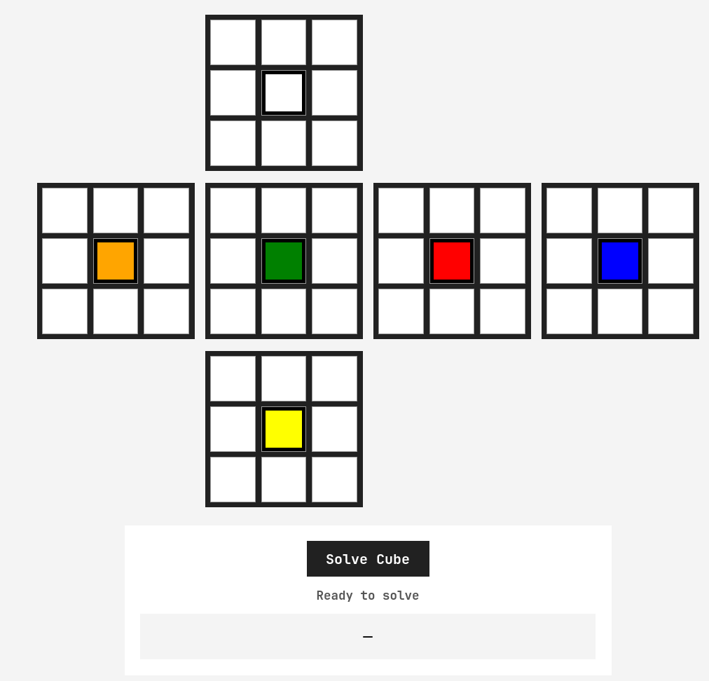

I have no idea how to solve a Rubik's Cube, and I doubt I ever will. What I do know, however, is Prolog. After completing a non-procedural programming course at university, I wanted to build something that would let me show off what I had learned.
This is a Rubik's Cube solver written in Prolog and interpreted through JavaScript for browser-based interaction. It is not especially fast, but it was certainly fun to make. At the moment, it can only solve cubes within a reasonable amount of time when they are approximately five or six moves away from being solved.
Links
- Repo: https://github.com/ElliotDomino/Prolog-Rubik-s-Solver
- Demo: Try the Rubik's Cube Solver
- Prolog Source: View the Prolog code
How It Works
To interact with the Prolog solver, the cube first needs a digital representation. The user interface allows the current state of the cube to be entered as a sticker model, which is then passed into Prolog through a JavaScript translation layer.
Once the state reaches Prolog, the program extracts the cubies: the physical pieces that make up a Rubik's Cube. The face data and cubie data are used to validate whether the entered cube represents a possible and solvable configuration.
When the cube is valid, the solver searches for a sequence of moves using an iterative deepening search:
- Search for a solution requiring zero moves.
- Search again with a maximum depth of one move.
- Continue increasing the depth until a solution is found.
This guarantees that the first solution found is optimal, but it also makes the solver incredibly slow.
Search Complexity
Each additional search depth compounds the amount of work required:
- Depth 1: approximately 18 searches
- Depth 2: approximately 18 × 12 searches
- Depth 3: approximately 18 × 12² searches
- Depth 4: approximately 18 × 12³ searches
- Depth 7: approximately 18 × 12⁶, or 53,747,712 searches
Every deeper iteration also repeats the work from all previous depths. It is not a particularly efficient solution, but it is still a solution.

Trying the Solver
The Prolog source is worth reading if you want to see how unusual the language can be, and how much complexity sits behind this seemingly simple implementation.
You can experiment with the browser demo above. Without a physical Rubik's Cube nearby, the Ruwix online cube solver can be useful in its flat view for creating test configurations.
Context
I built this project in the break between the end of classes and the beginning of my summer job. It was an excuse to create something with Prolog before I forgot everything I had learned.